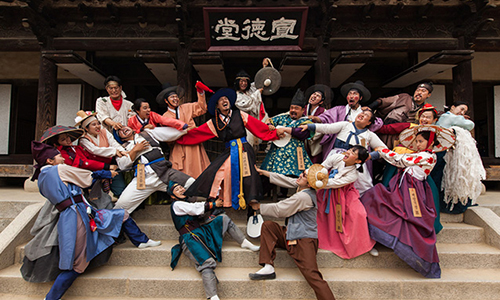
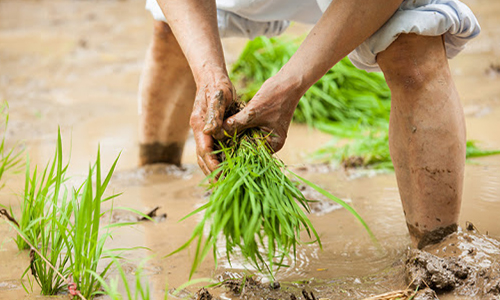

본문콘텐츠영역
민속촌 NOW
한국민속촌에서만 만날 수 있는 전통테마축제
야간 개장 공연 프로그램
| 구분 | 시간 | 프로그램 | 장소 |
|---|---|---|---|
| 공연 | 16:00 | 풍물한가락 | 공연장 |
| 16:30 | 우리가락 좋을씨고 | 선비집 | |
| 17:00 | 조선마술실록 | 공연장 | |
| 소리한마당 | 선비집 | ||
| 18:00 | 얼씨구 절씨구야 | 상가마을 | |
| 20:00 | 야간특별공연[연분] | 공연장 |
상기공연은 5/1(토)~10/31(일)주말 및 공휴일 운영됩니다.
당일 날씨 및 현장 상황에 따라 변경 또는 취소될 수 있습니다.
야간 개장 포토존
-
민속마을 9호
-
목교
-
지곡천 달
-
정문
AFTER4 야간권
2021.5.1(토)~2021.10.31(일)
-
자유이용권 성 인:25,000원 청소년:22,000원 아 동:22,000원 자유이용권 성인, 청소년, 아동 모두 15,000원
- 오후 20시 이후에는 매표소 운영마감으로 입장권 발권이 불가합니다.
- 16시 이후 입장시 할인가로 일괄 적용됩니다.
- 16시 이전 정상가 구매 후, 할인가 소급적용 및 환불은 불가합니다.
- 중복할인은 불가합니다.
연례행사
365일 신나는 전통문화 여행
계절행사
-
- 12월~6월 추억의 그때 그 놀이
- “즐거운 놀이와 맛있는 간식, 온기가 가득한 옛 추억 속으로 떠나는 여행”을 컨셉으로 마련된 야외체험행사. ‘달고나 만들기’, ‘전통화덕에서 군고구마, 군밤 굽기’ 등 구경만 해도 시간가는 줄 모를 옛날 군것질과 ‘초가집온돌방 체험’, ‘전통 연, 나무팽이 만들기’, ‘얼음썰매 타기’ 등 전통생활과 놀이가 기다리는 특별한 프로그램입니다. 엄마아빠는 물론 아이들도 즐거운 추억여행을 기대하세요!
-

- 4월~6월 웰컴투 조선
- “조선에 당도한 것을 환영하오~” 민속촌에 조선시대 인물들이 살아서 돌아다닌다면? 전래동화나 옛 이야기 속에 등장하는 개성만점의 조선시대 캐릭터들이 한국민속촌을 누비며 돌발적인 퍼포먼스와 이야기를 풀어내, 즐거운 볼거리가 많은 이색프로그램. 관람객의 즉석 참여가 가능한 퍼포먼스부터 조선시대의 생활문화를 그대로 경험할 수 있는 특별체험과 공연으로 채워져 시간여행을 떠난 듯 신비하고, 사람냄새가 물씬 풍기는 유쾌한 문화축제가 펼쳐집니다.
-
- 7월~8월 초록만발 조선이로다
- 초록잎이 무성한 나무와 계곡으로 둘러싸여 주변 지역에 비해 약 3도 가량 시원한 한국민속촌. 무더위를 피해 잊지 못할 추억을 남기고 싶은 여러분을 초대합니다. 캐릭터들과 함께 즐기는 대규모 물총싸움 ‘살수대첩’을 포함해 다양한 즐길거리가 풍성하게 마련됩니다. 민속촌이 추천하는 인생샷 포토존에서 사진 찍는 것도 절대 잊지마세요!
-
- 9월~11월 신묘한 마을
- 조선의 저승세계는 24절기에 따라 열리고 닫히기를 반복한다. 낮보다 밤이 길어지는 추분이 되면 저승의 문이 열리고 이를 기념하여 염라대왕은 그간 죄를 지었던 귀신들을 환생시켜주는 축제를 벌인다. 소원을 이뤄주는 환생국 판타지 '신묘한 마을'의 신비로운 이야기 속으로 여러분을 초대합니다.
-
- 1월~3월 설원의 사냥꾼
- 빙어낚시와 매사냥 등 겨울철 수렵생활을 바탕으로 조선시대 옛 선조들이 겨울을 보냈던 방법을 직접 체험해 보는 축제입니다. 다양한 체험 프로그램에 직접 참여해보며 설원의 사냥꾼으로 거듭나보세요. 추운 날씨도 까마득히 잊을 만큼 즐거움이 가득합니다.
세시행사
-
- 음력 1월 1일 설날
- 새해의 첫날인 설날은 우리민족의 대표적인 명절 중 하나입니다. 예로부터 우리 선조들은 설을 맞아 조상께 차례를 올리고, 가족과 친척들이 한 곳에 모여 덕담을 나누며 복을 빌어주고 즐거운 놀이를 펼쳤습니다. 설날 한국민속촌에서는 ‘정초고사’, ‘지신밟기’, ‘복부적나누기’, ‘복떡나누기’, ‘토정비결 보기’ 등 이웃과 따뜻한 정을 나누는 설날 민속잔치의 풍경이 이어집니다.
-
- 음력 1월 15일 정월대보름
- 정월대보름은 새해의 길흉화복을 점치는 날로, 예로부터 우리나라의 대표적인 큰 명절 중 하나입니다. 그 중 가장 달이 밝은 대보름날에 어둠, 질병, 재액을 밀어 내는 기운의 상징인 달빛에 새해의 복과 풍년을 기원했습니다. 정월대보름을 맞이해 한국민속촌에서는 선조들의 미풍양속이 담긴 다채로운 기복행사가 열립니다. ‘달집태우기’, ‘장승제’, ‘동제’, ‘볏가릿대세우기’, ‘지신밟기’, ‘보름음식 나누기’ 등 온가족이 함께 즐길 수 있는 옛 방식 그대로의 전통민속행사가 마련됩니다.
-
- 음력 5월 5일 단오
- 단오는 1년 중 양기가 가장 왕성한 길일로, 그 기운을 누리면 그 해 불길한 것들이 모두 사라진다 하여 다양한 기복행사를 행했습니다. 한국민속촌에서는 이러한 전통의 모습과 세시풍속을 그대로 재현한 단오맞이 특별행사가 진행됩니다. ‘창포물머리감기’, ‘쑥떡나누기’, ‘단오선만들기’ 등 다양한 세시행사를 통해 액운을 물리치고 동시에 건강한 여름나기를 기원했던 전통단오풍속을 체험 할 수 있는 시간이 될 것입니다.
-
- 음력 8월 15일 한가위
- “더도 말고 덜도 말고 한가위만 같아라”는 말로 대표될 만큼 결실의 계절을 상징하는 추석은 우리민족 최대의 명절입니다. 한국민속촌에서는 ‘전통예술공연’, ‘성주고사’, ‘추수탈곡행사’, ‘전통떡나누기’ 등 한가위 정취를 한껏 맛볼 수 있는 다채로운 행사가 마련됩니다. “얼쑤!” 어깨춤이 절로 나는 한국민속촌만의 전통민속잔치를 통해 한가위 명절의 풍성함을 즐기시기 바랍니다.
-
- 음력 11월 23일 동지
- 동지는 일년 중 밤이 가장 길고 낮의 길이가 가장 짧은 날로, 대설에서부터 소한까지의 절기를 말합니다. 우리나라에서는 동지를 기점으로 낮이 점점 길어지기 때문에 한 해가 시작된다 하여 ‘작은 설’이라 불렀습니다. 한국민속촌에서는 액운을 쫓기 위한 ‘동지팥죽나누기’, ‘동지책력나누기’, ‘동지부적찍기’ 등 동지 때 행했던 다양한 전통 풍습을 재현한 행사가 진행됩니다.
농경행사
-

- 5월말~6월경 모내기
- 논농사는 모판을 준비하여 모심기를 하고, 밭농사는 바로 파종하여 재배합니다. 한국민속촌의 논농사는 전통적인 ‘줄모심기’의 방법으로 볏모를 심습니다. 줄모는 줄을 옮겨가며 모를 심는 기준을 맞추고, 기준 줄에 맞추어 나란히 모를 심는 방법으로 여러 명이 함께 작업하기 때문에 단결력과 협동심이 중요합니다
-
- 6월경 보리와 밀베기
- 보리와 밀은 겨울에 심어 여름에 수확하는데 특별히 거름을 주지 않아도 잘 자라고, 풀과 벌레들이 동면에 들어가는 겨울에 심기 때문에 병충해와 잡초의 걱정이 없어 재배가 쉬운 작물입니다. 한국민속촌의 보리와 밀은 6월 중 수확하며, 전통농기구인 낫을 이용해 걷이를 합니다.
-
- 9월말~10월경 추수
- 가을에 영근 곡식을 수확한다고 하여 추수(秋收) 또는 가을걷이라고 합니다. 작물의 수확은 각기 시기를 달리하지만, 가장 주요한 곡식이었던 벼·콩·기장·조·옥수수 귀리·메밀의 수확이 가을에 이루어져, 가을은 한 해의 농사를 마무리하고 수확을 감사하는 풍요로운 계절입니다. 한국민속촌의 추수는 낫을 사용해 수확하여 도리깨, 개상 등의 전통농기구로 탈곡하는 방법으로 이루어집니다.
-
- 11월말~12월초 초가집 이엉잇기
- 한국민속촌의 월동준비는 초가집들에게 새 지붕을 얹어주는 이엉잇기로 시작합니다. 이엉잇기는 초가집의 헌 지붕을 걷어내고, 새 볏짚으로 만든 지붕을 얹어주는 작업으로 1년에 한번 이루어집니다. 한국민속촌의 초가집 이엉잇기는 선조들의 겨울나기 방식을 그대로 따르는 전통적인 월동준비 장면과 함께 굼벵이 채집이 가능한 이색적인 농경행사입니다.